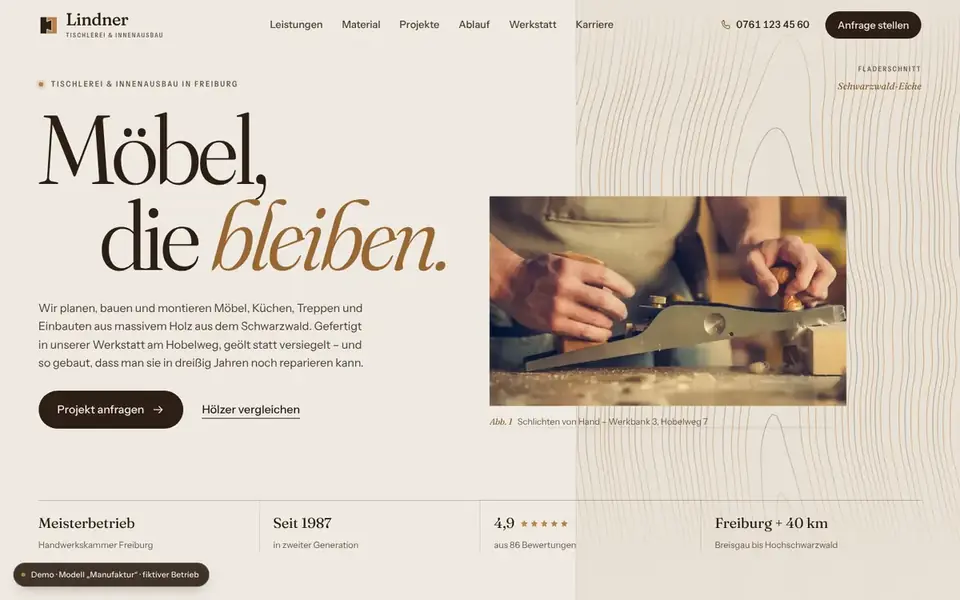
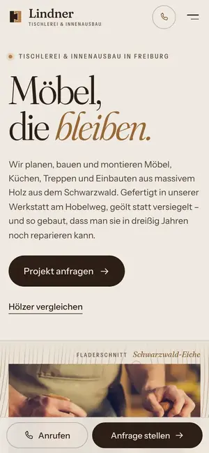

Case Study 12 / 30 · Handwerk & Bau
Lindner – Tischlerei & Innenausbau
Modell „Manufaktur“
Editoriale Tischlerei-Demo mit prozedural gerenderter Materialbibliothek und gezeichnetem Ablauf.


Ausgangslage
Lindner ist eine erfundene Tischlerei mit Innenausbau in Freiburg, die Möbel, Küchen und Treppen nach Maß fertigt. Wer so einen Betrieb sucht, will Material und Oberfläche vergleichen, Referenzen sehen und verstehen, wie der Weg vom ersten Gespräch bis zur Montage aussieht. Die Seite soll handwerkliche Sorgfalt vermitteln und gleichzeitig eine konkrete Anfrage erleichtern.
Idee
Das Modell „Manufaktur“ ist warm und editorial: viel Weißraum, feine Haarlinien, nummerierte Abschnitte (Nº 01 bis Nº 11), Fraunces als Display-Schrift mit Instrument Sans für den Text. Papier, Nussbaum-Dunkel, Eiche als Akzent und ein Waldgrün bilden die Palette. Die Hero-Headline morpht beim Laden über die Variable-Font-Achsen von Fraunces, daneben folgt eine generative Holzmaserung der Maus.
Was die Seite kann
- MaterialbibliothekFünf Holzarten und drei Oberflächen; die Tischplatte wird prozedural als Canvas gerendert, beim Wechsel zieht ein Hobelstrich über die Platte, der Steckbrief nennt Herkunft, Härte, Charakter und Preisniveau.
- Übernahme in die Anfrage„Diese Kombination anfragen“ trägt Holz und Oberfläche in den vierstufigen Anfrage-Assistenten ein.
- Projekte als StreckeAuf dem Desktop eine gepinnte horizontale Fahrt mit Fortschrittsanzeige und Bild-Parallaxe, auf dem Handy eine Wisch-Liste mit Scroll-Snap.
- Ablauf als SkizzeEine Bleistiftzeichnung in SVG zeichnet sich beim Scrollen in fünf Schritten selbst, während die Schritte aktiv werden.
- JahresringePro Betriebsjahr wächst ein generierter SVG-Ring, Meilensteine sind markiert, dazu Zähler für Jahre, Team und Projekte.
- Einzugsgebiet und StimmenEigene SVG-Karte mit hervorhebbaren Orten und ein Karussell für Kundenstimmen, per Tasten und Wischen bedienbar.
Dein Betrieb
So eine Seite für dich?
Schreib mir kurz, was du anbietest und was deine Website leisten soll. Du bekommst eine ehrliche Einschätzung, was sie kostet und was sie dir bringen kann.
Projekt anfragen